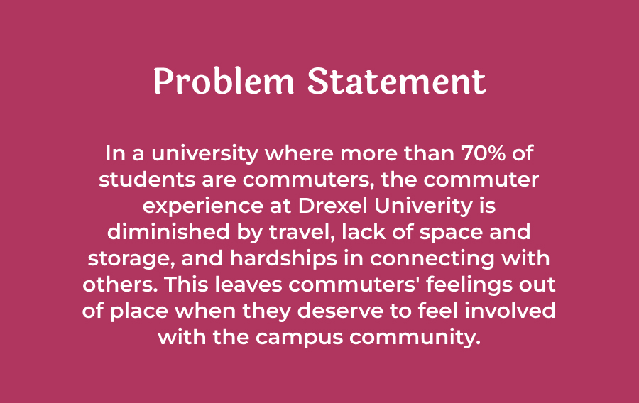
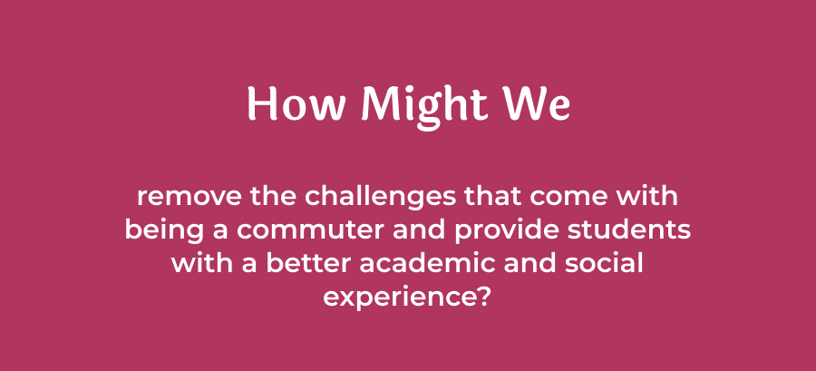
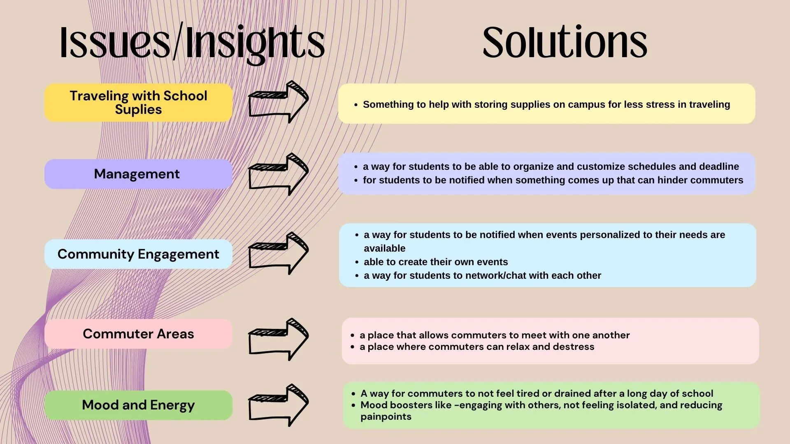
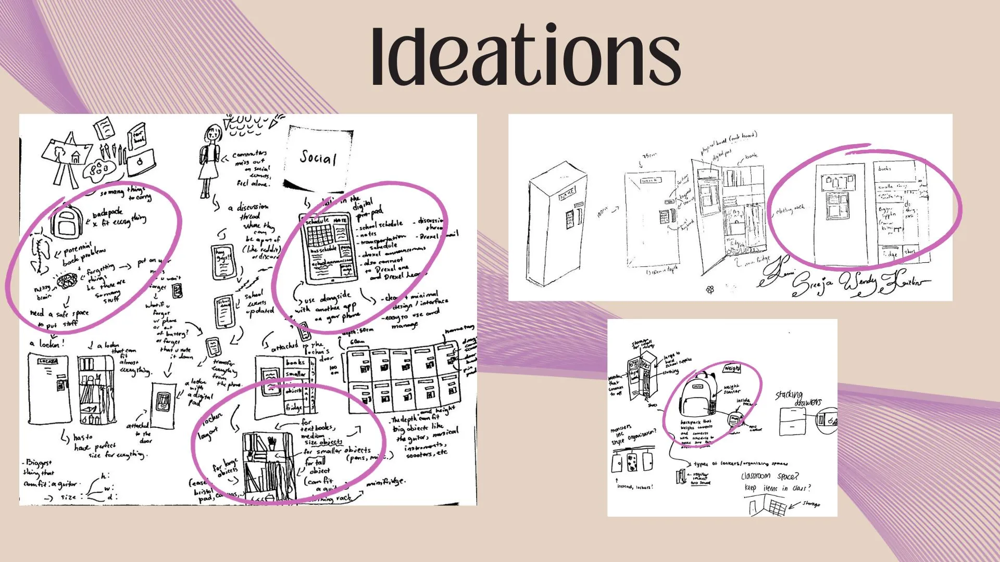
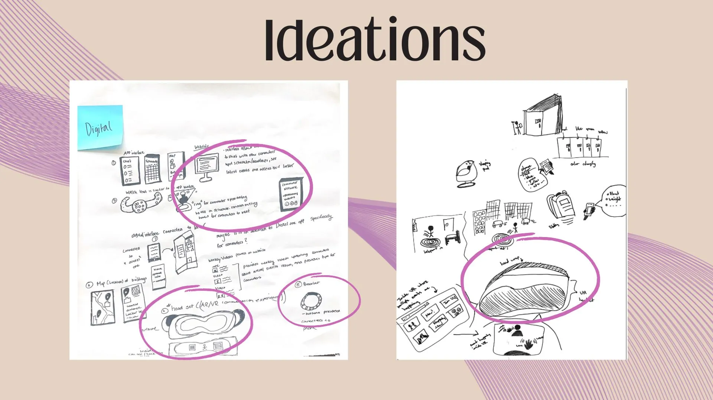
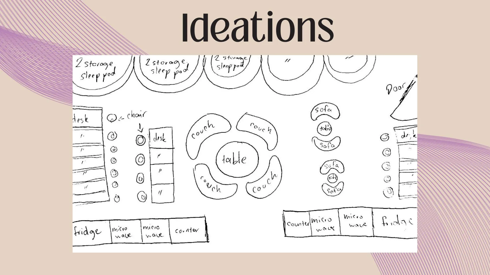
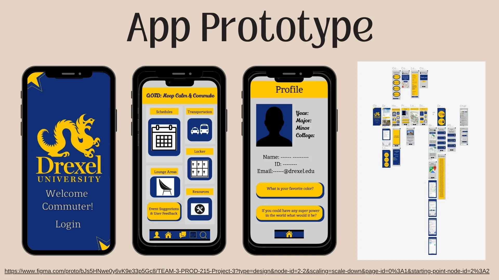
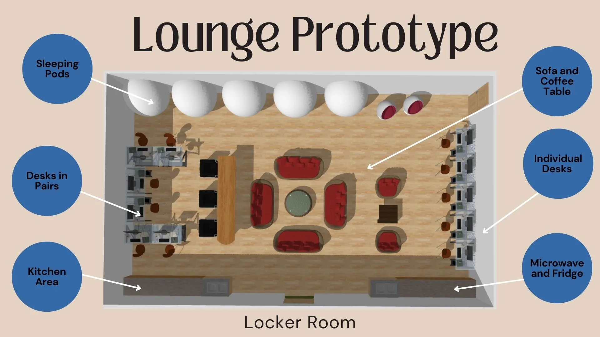
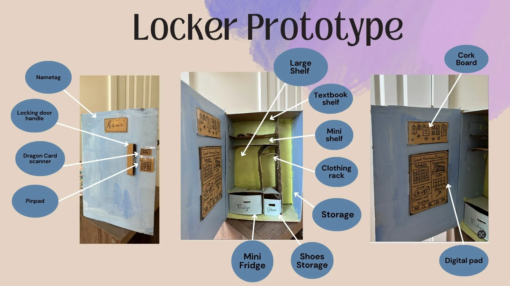

Dragon Venture
- date: June 2023
- type: PROD 215 Project
- status: complete
- overview: Final Project focusing on commuter students, creating a product that will solve issues they face at Drexel.
Intro
This was the final group project for PROD 215, and it was challenging, but also extremely rewarding. Since product design is deeply rooted in interacting with and creating for people, our task for this project was to solve issues that communities we were close to face.
Process
I’m an empathetic problem solver when it comes to things I care about, and since it’s a substantial part of my personality I thought back to my family, friends, and problems that they dealt with. Every day, I see commuter students at Drexel and how that has influenced their daily activities. I thought back to how one of my closest friends had to always be two steps ahead when it came to coming to campus and going about her day, and how it also brought about frustration. Along with regular classes, commuters have to consider fluctuating travel times, varying gaps in their schedule, and large objects they have to lug around all day. I had first-hand experience watching my friend carry around heavy drawing boards with nowhere to keep them and the color-coded schedule in which she planned wake-up and travel times to the minute. Since she had to take public transportation home as well, safety issues later in the evenings meant that she couldn’t always socialize and meet new people at clubs and organizations.
Drexel doesn’t have a proper infrastructure to assist commuter students, despite them making up around 70% of the student population. Commuters had to rely on temporary places to rest and keep their things such as the library, whereas on-campus students depend on their dorms. If commuters forgot something at home, they had no other option than to forgo the item that day at the expense of their grades or mood. Considering the various issues that commuters face every day, my group decided to use this project as an opportunity to find a solution to the problem.

Our final project had to have two components: a main product, as well as a digital component, like an app. The projects had to be tied to a social group that we were either a part of or dealt with a lot. We formed groups by the class thinking of 3 ideas individually and narrowing them down to the type of problem it encompassed, such as social, environmental, organizational, etc.
Our problem fit into the organizational category since it involved figuring out better ways for commuters to make the most of their space. My group of 4 consisted of two commuters and two on-campus students, which was a really interesting way of broadening our scope of information. Rather than just relying on external research or data, we could delve deep into issues that commuters face and therefore come up with a well-rounded solution.
We developed a problem statement and continued with a “How Might We?” Statement to ideate potential solutions.

This drove our goal of enabling more opportunities for commuters to become further engaged in Drexel and offer indispensable resources for them to use.
Discovery
When we started researching, our goal was to understand the depth of the challenges that commuters face, as well as the parties involved.
We started by thinking about firsthand accounts; finding commuters and asking them about their experiences and pain points. We made an 18-question survey delving deep into location, types of transportation, amount of time taken to travel, majors, their knowledge of existing Drexel Resources, and top 3 challenges, among other things. The most important question was about their challenges as commuters since that gave us the most insight on what we should form our solution around. Repeated answers centered around the amount of stuff necessary to carry, the lack of parking around the city, safety when there were late classes, lack of socialization in campus life, and the wasted time that came from gaps in schedules plus factoring in more tasks. This overall reduced the commuter experience. We also found that many people only heard about the small amount of commuter resources through word of mouth and occasional school events. We knew that this meant we needed to focus on physical spaces for them to rely on, as well as a digital component to help all commuters recive crucial information.
We created empathy maps and performed in-depth commuter interviews. We then discussed the stakeholders involved: Drexel, SEPTA and other public transportation, parents, and students themselves.
Iterations and Ideations
Using the insights found from our research, we thought of specific solutions for the 5 issues we found most pressing: Traveling with supplies, management, community engagement, commuter areas, and the mood and energy of the commuter, which impacts their experience and performance at school.

Next came the ideations! We thought about ways we help commuters tackle storage, time management, and ways to divulge important information. Each of us took our time in creating solutions, some that came up included a backpack that would monitor school supplies so the commuter wouldn’t forget it and be better for carrying around all day. The solutions that stood out to us were a digital interface that would act as a task manager with schedules, notes, and transportation information, a lounge with spaces to study, eat, sleep, and socialize, as well as a locker designed to fit large items like musical instruments and drawing boards, plus keep food cold. These would become our solutions!



Final Project
Here our our designs below! The locker would be specifically designed for commuters to fit large objects, clothing, and food into as well as a tablet interface to connect to the app. The lounge would be an area dedicated for commuter students to rest, recharge, and study. The app would be an all-in-one hub, where individual students can check their schedules, connect to the interface on their locker, and have a quicker way of seeing transportation routes and updates all in one place. It would also have a messaging component to help them connect with other commuters in the same situation and ways for them to learn about and keep in touch with organizations on campus. I created the blueprint for the lounge and worked with one of my team members to create the app on Figma.



Once we had completed the prototypes, we got feedback from two different commuters, who liked the syncing of information between all the components and the idea of the lounge and locker having options to rest and store food. They especially liked the idea of the sleeping pod in the lounge and suggested a reservation system since they would be popular.
We even made final storyboards displaying how the lounge, app, and locker were to be used.
Since this was part of our product design class, we also had to consider a promotional strategy for our product and discuss pricing and advertising. We took into account the research from our survey and included various advertising methods like word of mouth and the Drexel Newsletter. Our idea would be funded by Drexel and donations, and there would be a small purchase price as well. Since the community involved consisted of broke college students, we decided to make everything free except the lockers. Since they were custom to the user and would be ID protected, we put the price as around $20 per term.
From start to finish, this project took a lot of planning, care, and discussion, but we were able to deliver a solid presentation about an issue prevalent in Drexel. We presented Dragon Venture as our final project, but also in attendance were some Drexel staff part of Product Design. Once we finished presenting, we received the opportunity to develop and implement the project at Drexel through an independent study!
Reflection
Overall, I learned a lot through this project, and it was a learning experience to remember. I loved working in a team and being the member who clarified things and brought more knowledge into the discussion. I enjoyed working in a group where we were seeing an idea being created from start to finish. I want to be part of other projects that bring solutions to a social issue because when we help the people around us, it ultimately leads to a better experience for us all.